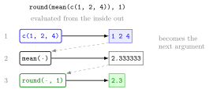

Function Call¶
Definition¶
A function call runs a function on some input and returns a value. It is written as the name of the function followed by parentheses that contain the arguments, separated by commas:
An argument can be a literal value, an object, or the result of another function call. In a nested call such as round(mean(c(1, 2, 3, 4)), 1), R evaluates from the innermost call outwards. Arguments can also be given by name, as in log(4, base = 10); arguments that have a default value may be left out. The help page of a function, opened with ?log or help(log), lists its arguments and their defaults.
R comes with many built-in functions, for example sqrt() (square root), log() (natural logarithm), exp(), round() and factorial().
Interpretation¶
A function call is the R version of applying a function to an input: sqrt(16) is and returns 4. The parentheses are what make R run the function; without them, R just shows what the function is.

The figure takes Example 2 apart. The innermost call c(1, 2, 4) builds the vector (blue); its result is the argument of mean(), which returns 2.333333; that number becomes the first argument of round(…, 1), which returns 2.3 (green). Reading a nested call from the inside out is the same as reading a composition of functions from right to left.
Each argument has a position and a name. log(4, base = 10) and log(4, 10) give the same result, because base is the second argument of log(). Leaving base out uses its default, the number , so log() is the natural logarithm. How R matches arguments by position and by name is the topic of Function Arguments and Defaults; later you will write your own functions that are called in exactly the same way.
A common mistake is to assume that log() means the base-10 logarithm, as on many calculators: log(100) is about 4.6, not 2. Another is to expect a call to change its input: sqrt(x) returns a new value and leaves x as it was, unless the result is assigned back with x <- sqrt(x).
Key Results¶
- A call is a name followed by parentheses:
f(arguments). The returned value is printed, or stored with<-. - Nested calls are evaluated from the innermost call outwards.
- Arguments can be matched by position or by name; an argument with a default value can be omitted.
log(x)is the natural logarithm;log(x, base = 10)gives the base-10 logarithm.- Calling a function does not change the objects passed to it.
?nameorhelp(name)opens the help page with the arguments and their defaults.
Examples¶
1. Built-in functions.
sqrt(16)
#> [1] 4
exp(1)
#> [1] 2.718282
factorial(5)
#> [1] 120
round(3.1415)
#> [1] 3
round(3.1415, 2)
#> [1] 3.14
round() has an optional second argument, the number of decimal places, with default 0.
2. Nested calls.
round(mean(c(1, 2, 3, 4)), 1)
#> [1] 2.5
mean(c(1, 2, 4))
#> [1] 2.333333
round(mean(c(1, 2, 4)), 1)
#> [1] 2.3
In the last line R first builds the vector c(1, 2, 4), then takes its mean , and finally rounds it to one decimal.
3. Optional and named arguments.
log(4, base = 10)
#> [1] 0.60206
log(4, 10)
#> [1] 0.60206
log(100)
#> [1] 4.60517
log(100, base = 10)
#> [1] 2
The first two calls match the same argument, once by name and once by position. log(100) uses the default base .
4. Pitfalls: missing parentheses or arguments, and unchanged inputs.
sqrt
#> function (x) .Primitive("sqrt")
sqrt()
#> Error in sqrt() : 0 arguments passed to 'sqrt' which requires 1
x <- 16
sqrt(x)
#> [1] 4
x
#> [1] 16
Without parentheses R prints the function itself instead of running it; with empty parentheses it complains that the required argument is missing. The call sqrt(x) does not change x.
Prerequisites¶
Related Concepts¶
- Function Arguments and Defaults
- Writing Functions
- Vectorized Operations
- Packages
- Composition of Functions
Sources¶
- Programming for EOR · Week 1
- Lecture script Intro to R and RStudio (Part 1), sections "R as a Pocket Calculator" and "Functions"; Week 1 exercise solutions (Part 1, exercise 5)
Aliases: calling a function, built-in function, nested function call, sqrt(), log(), round(), factorial(), help page Keywords: arguments, nested calls, optional arguments, help with ? Symbols: square root
Last updated: 10 November 2026 16:43
Function CallAtomic Data TypesAtomic VectorFunction Arguments and DefaultsPipe OperatorPackagesReading and Writing CSV FilesSequences with : and seq()Vectorized OperationsWriting FunctionsR and RStudioObject and AssignmentFunctionComposition of Functions